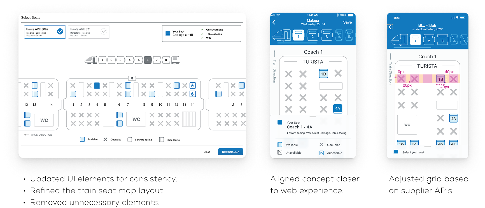
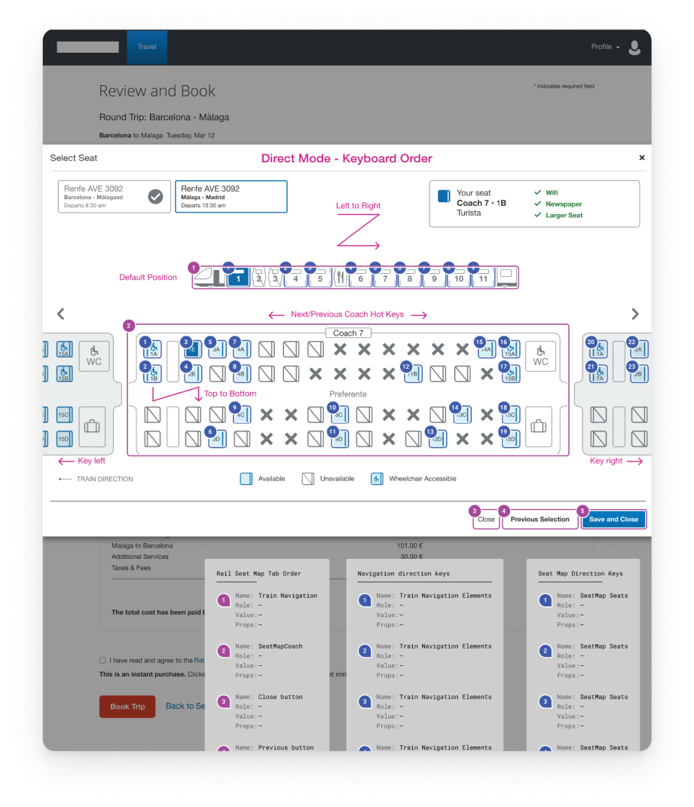
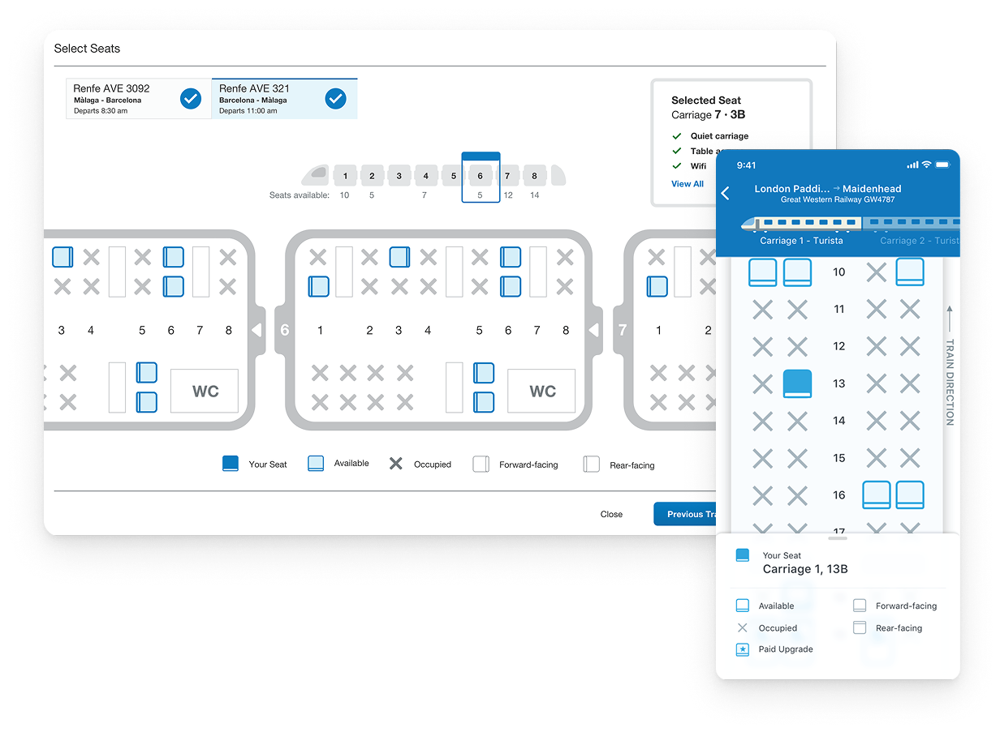
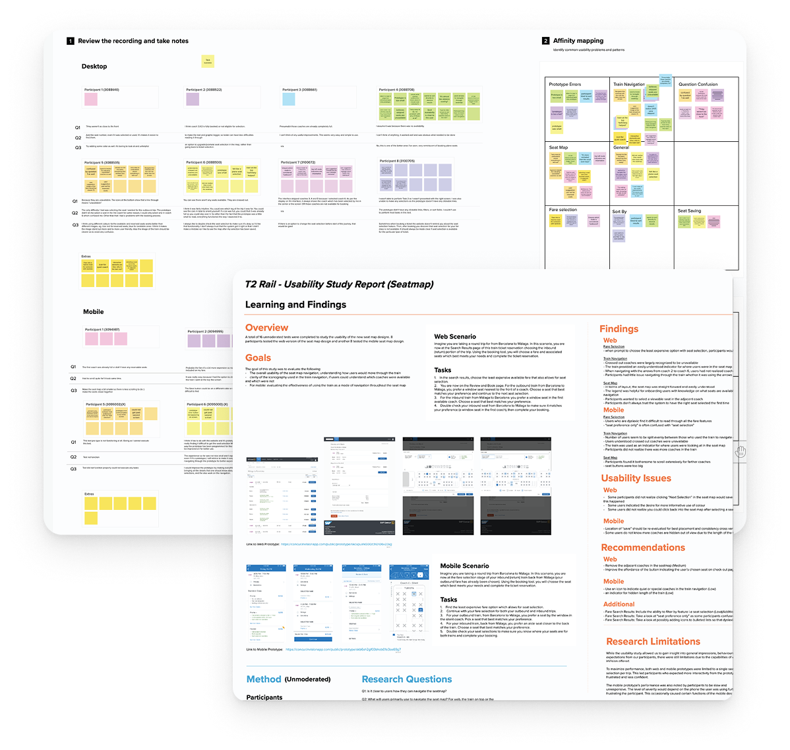

Designing an Accessible Rail Booking Experience
How do you simplify one of the most information-dense experiences in travel?
- 20% increase in completed bookings.
- 35% reduction in seat selection errors.
- Components subsequently adopted by the Air seat map team.
Why this project existed
SAP Concur’s rail booking experience handled complex routing, multi-leg journeys, and seat availability across dozens of rail operators — each with different data formats, seating models, and booking rules.
The existing seat selection experience collapsed under that complexity. Business travelers — already navigating policy rules, approval workflows, and tight itineraries — hit an interface that required expertise they didn’t have to use.
Three constraints that defined the design
Rail is the most information-dense booking surface in travel. Every design decision had to hold up under the data load.
Making seat data scannable, not just displayable
Seat selection data includes car type, seat class, direction of travel, table vs. window, reservation status, and accessibility needs — all variable by operator. Displaying it all created cognitive overload; hiding it caused misbookings.
Decision · A spatial seat map with progressive detail — the map shows position, selection reveals the relevant attributes for that seat.

Designing for accessibility without removing capability
A visual seat map is inaccessible to screen reader users by default. But replacing it with a list loses the spatial understanding that helps travelers choose confidently.
Decision · A dual-mode design: a visual map with full ARIA semantics, plus a structured list mode that keyboard and screen reader users can switch to — same data, appropriate for each mode.

Handling policy constraints without punishing the traveler
Corporate travel policies restricted certain seat classes, fare types, and booking windows. Surfacing policy violations after selection — the existing behaviour — was the primary source of rebooking.
Decision · Pre-filter to compliant options by default, with a clear path to view all seats for travelers with a legitimate reason to override — policy-forward without policy-punishing.

Mapping seat complexity
The seat data model varied significantly across rail operators. I mapped the full matrix of variables — car type, class, direction, reservation status, accessibility attributes — to find the minimum viable representation that worked across all operators without requiring operator-specific design.
Rapid prototyping of the spatial layout let me test legibility at different data densities before committing to the ARIA implementation — a significant engineering investment that needed to be right before build began.
Testing with business travelers
I ran sessions with frequent business rail travelers — people booking multi-leg journeys under policy constraints with limited time to make decisions. The sessions focused on seat selection time, confidence in the choice, and successful navigation by screen reader users.
The dual-mode accessibility approach was validated in the first round — screen reader participants navigated the structured list without needing the map. The sessions also surfaced that travelers wanted to see their previously selected seats when returning from a policy override — a gap we closed before launch.
Stakeholders pushed back on the accessibility investment early — "Does everything need to be tabbed? Can we skip some items?" Rather than debate it in a conference room, I interviewed visually impaired travelers directly.
One finding reset our assumptions: guide dog owners consistently preferred table seats for the extra space on long journeys. That changed the screen-reader priority order and told us exactly which components were safe to skip. My documentation of the findings became the reference engineering built the implementation from.
“It was a bit hard to tell what each seat offers. I want to see options like power outlets or extra space right away, not guess.”

Clarity inside complexity
The seat selection experience shipped across responsive breakpoints. Accessibility compliance was validated against WCAG 2.1 AA. The data model held across all rail operators in the initial launch set.
20% increase in completed bookings
Simplifying the most information-dense step in the flow reduced abandonment at seat selection.
35% reduction in seat selection errors
Pre-filtering to policy-compliant options and clarifying seat attributes reduced mis-selections and the rebooking they caused.
Adopted by the Air seat map team
The spatial seat map and dual-mode accessibility pattern were subsequently reused outside rail — validation the model generalized beyond its original scope.
What this project taught me
Four stakeholders pulled this design in four directions — traveler, admin, policy team, rail operator — and each had a legitimate case. The work was finding the arrangement that honored all of them without asking anyone to compromise more than they had to.
Accessibility forced better design decisions across the board. The structured list mode I built for screen reader users turned out to be what keyboard-only users preferred too — and it revealed information hierarchy problems in the visual map that I’d missed.